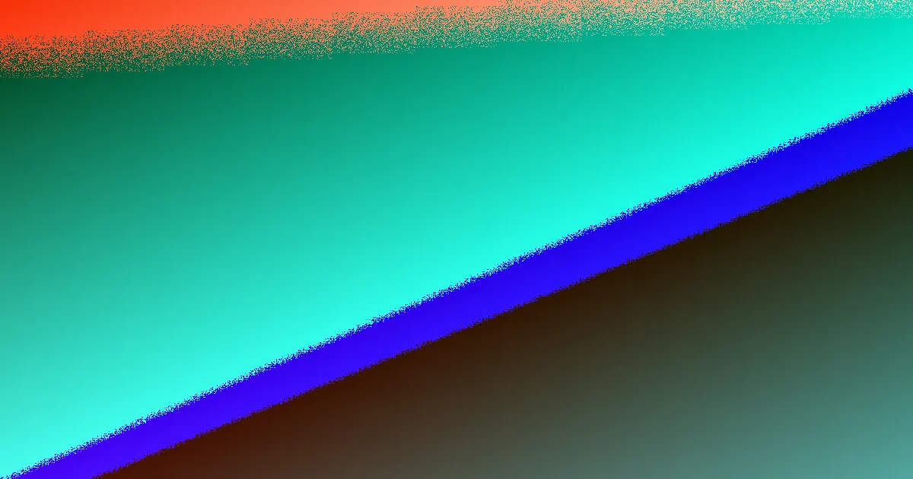

Perth retaining wall jobs most often come down to six named systems: locally quarried limestone, post-and-panel concrete, besser block, timber sleeper, rock and boulder walls. The published indicative installed cost is roughly $250 to $600 per square metre of wall face, typically excluding GST, excavation, drainage and difficult access. In Western Australia a building permit generally becomes necessary once a wall retains more than 0.5 m of ground, and walls of any height may still need one where adjoining land, boundary positions or connected building work are involved. Formal designs reference AS 4678 and the BA3 Certificate of Design Compliance process. Material choice should follow retained height, soil type, drainage path and approval position rather than appearance alone.
For local buyers, retaining walls perth local options compared for homeowners weighing up wall systems before they commit to a design.
Retaining Walls Perth Local Options Compared Explained
The fastest way to narrow the field is to sort the six named systems by what each is structurally good at, then check that against your block. The published guidance groups them roughly like this:
- Limestone blockwork: quarried locally and described as the material most Perth walls are built from, especially where sandy ground suits block construction.
- Post-and-panel concrete: positioned for taller or longer runs where a modular, engineered look and repeatable construction matter.
- Timber sleeper: aimed at low garden terracing where loads are modest and budgets are tight.
- Besser block: a masonry option that sits in the wider decision set depending on height, access and approval needs.
- Rock and boulder walls: suited to certain landscape settings, with suitability still governed by load, soil and drainage.
None of these is a default answer. The guide's point is that the system must match the retained load, the ground it bears on and the drainage path, not the other way around.
Matching a wall system to Perth ground conditions
Perth ground is not uniform, and the guides name two settings that change the brief. On the coastal sand plain, walls frequently hold a level building pad or stop a sandy face from ravelling, so drainage behind the wall and footing behaviour in sand drive the design. In the Darling Scarp foothills, steeper slopes, shallow soil over rock and concentrated winter runoff push the job toward engineering input and more robust construction.
A useful brief states the approximate retained height rather than only the visible face height, and notes whether the wall sits near a boundary, building pad, driveway or fence. Water behaviour after rain is a core input: a wall that interrupts a natural drainage path needs a planned subsoil or agg-pipe solution, not an afterthought. If you are still deciding between systems, our companion piece on retaining walls perth red flags worth checking before you sign covers the warning signs that a quote may be under-scoped.
What the 0.5 metre permit trigger actually means
The cited WA position is that a building permit is generally needed once a wall retains more than 0.5 m of ground. The same guidance is clear that the trigger is not only height. A wall of any height can still require a permit if it:
- is tied to other building work on the property,
- affects or protects adjoining land,
- sits on or forms part of a boundary wall or substantial dividing fence.
For walls needing formal design, the guide points to AS 4678 for earth-retaining structures and the BA3 Certificate of Design Compliance process. In practice this means the approval conversation should happen before pricing is locked in. Two sensible questions for any contractor are: which approval path do you expect for this wall, and is engineering documentation required before the price is final? Because exemptions and local requirements vary, confirming with the relevant local government is the safe step before assuming no permit applies.
Reading quotes so the lowest figure is real
The indicative installed range is roughly $250 to $600 per square metre of wall face, and the guidance stresses it excludes GST, excavation, drainage and difficult access. That exclusion list is why the cheapest square-metre rate is rarely the cheapest finished job. A quote built only on visible wall face can grow once excavation depth, cartage, drainage aggregate and restricted machine access are priced on site.
To compare like with like, ask every contractor to price the same scope: identical retained height, same material system, same drainage assumption and the same approval allowance. Then separate the line items:
- wall construction versus excavation, cartage and site preparation,
- drainage priced, excluded or provisional,
- engineering and permit documentation included or not,
- the specific site conditions that would trigger a revised price.
When each quote treats these items consistently, the comparison reflects the real project rather than a stripped-down version of it.
A four-step method for deciding between options
- Describe the site first. Record suburb, approximate retained height, slope, access limits, and whether adjoining land, a fence or a building pad is involved.
- Shortlist two or three systems. Test limestone, post-and-panel concrete, besser block, timber sleeper, rock or boulder options against height, budget and ground conditions, and drop anything the site rules out.
- Check approval risk early. Ask whether the 0.5 m threshold, a boundary position or impact on adjoining land points to a permit or design documentation.
- Compare itemised quotes only. Make sure excavation, drainage, GST, difficult access, engineering and permit costs appear consistently across every quote before ranking them.
This sequence keeps material preference subordinate to structure, approvals and total cost, which is where most wall projects are actually won or lost.
- Document the site. Write down the suburb, retained height, slope, access limits and any boundary, fence or building pad involvement.
- Shortlist materials. Compare limestone, post-and-panel concrete, besser block, timber sleeper, rock and boulder options against height, budget and ground.
- Confirm approval path. Ask whether the 0.5 m threshold, boundary position or adjoining land impact means a permit or engineering documentation is needed.
- Compare itemised quotes. Ensure each quote treats excavation, drainage, GST, access, engineering and permit costs consistently before deciding.
| Wall system | Best suited to | Watch point |
|---|---|---|
| Limestone blockwork | Most Perth walls, sandy ground | Drainage design behind the face |
| Post-and-panel concrete | Taller or longer runs | Foundation and panel engineering |
| Besser block | Flexible masonry option | Height and approval limits |
| Timber sleeper | Low garden terracing | Shorter service life, lower loads |
| Rock walls | Landscape-integrated settings | Skilled placement, ground fit |
| Boulder walls | Natural look on larger blocks | Stability and drainage detailing |
Common questions
How much do retaining walls cost per square metre in Perth? The indicative installed range cited in local guidance is roughly $250 to $600 per square metre of wall face. Treat it as a starting figure only: it typically excludes GST, excavation, drainage and difficult access, so a like-for-like comparison needs each contractor pricing the same scope.
At what height does a retaining wall need a permit in WA? A building permit is generally required once a wall retains more than 0.5 m of ground. Walls of any height can still need one where they connect to other building work, affect or protect adjoining land, or sit on a boundary wall or substantial dividing fence, so confirm with the local government before assuming an exemption.
Which retaining wall material is most common in Perth? Locally quarried limestone is described as the material most Perth walls are built from, particularly where sandy ground suits block construction. Post-and-panel concrete suits taller or longer runs, timber sleeper suits low garden terracing, and besser block, rock and boulder options remain in the mix depending on the site.
This guide compares Perth retaining wall materials, costs and approval triggers for homeowners at the early planning stage, grounded in published local guidance.